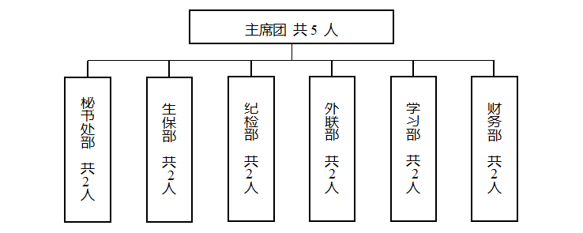

武工程职业技术学院学生会组织改革公示
为落实共青团中央、教育部、全国学联联合下发的《关于推动高校学生会（研究生会）深化改革的若干意见》，以及《高校学生会组织深化改革评估工作方案》要求，接受广大师生监督，现将我校学生会改革情况公开如下。
一、改革自评表
改革自评表
组织名称：______武汉工程职业技术学院 学生会
|
项目 |
验收结论 |
备注 |
|
|
1. 坚持全心全意服务同学，聚焦主责主业开展工作。未承担宿舍管理、校园文明纠察、安全保卫等高校行政职能。 |
√□达标 □未达标 |
|
|
|
2. 工作机构架构为“主席团+工作部门”模式，未在工作部门以上或以下设置“中心”、“项目办公室”等常设层级。 |
√达标 □未达标 |
|
|
|
3. 机构和人员规模 |
校级学生会组织工作人员不超过40人，学生人数较多、分校区较多的高校不超过60人。 |
√达标 □未达标 |
实有35 人 |
|
校级学生会组织主席团成员不超过5人。 |
√达标 未达标 |
实有 5 人 |
|
|
校级学生会组织工作部门不超过6个。 |
√达标 □未达标 |
实有 6 个 |
|
|
4. 除主席、副主席（探索实行轮值制度的高校为执行主席）、部长、副部长、干事外未设其他职务。 |
√达标 □未达标 |
|
|
|
5. 学生会组织工作人员为共产党员或共青团员。 |
√达标 □未达标 |
|
|
|
6. 学生会组织工作人员中除一年级新生外的本专科生最近1个学期/最近1学年/入学以来三者取其一，学习成绩综合排名在本专业前30%以内，且无课业不及格情况；研究生无课业不及格情况。 |
√达标 未达标 |
|
|
|
7. 校级学生会组织主席团候选人均由学院（系）团组织推荐，经学院（系）党组织同意，校党委学生工作部门和校团委联合审查后，报校党委确定；校级学生会组织工作部门成员均由学院（系）团组织推荐，经校党委学生工作部门和校团委审核后确定。 |
√达标 □未达标 |
|
|
|
8. 主席团由学生代表大会（非其委员会、常务委员会、常任代表会议等）选举产生。 |
√达标 □未达标 |
|
|
|
9. 2019年10月以来召开了校级学生（研究生）代表大会。 |
□达标 √未达标 |
召开日为： 12月底 |
|
|
10. 校级学生（研究生）代表大会代表经班级团支部推荐、学院（系）组织选举产生。 |
√达标 □未达标 |
|
|
|
11. 学生会组织认真学习贯彻全国学联二十七大会议精神有实质性举措，学生会工作人员普遍知晓习近平总书记贺信和党中央致词精神，了解全国学联大会报告和章程修正案基本内容，了解团中央、教育部有关工作要求。 |
√达标 □未达标 |
|
|
|
12. 组建以学生代表为主，校党委学生工作部门、校团委等共同参与的校级学生会组织工作人员评议会；主席团成员和工作部门负责人每学期向评议会述职。 |
√达标 □未达标 |
|
|
|
13. 学生会组织工作人员参加评奖评优、测评加分、推荐免试攻读研究生等事项时，依据评议结果择优提名，未与其岗位简单挂钩。 |
√达标 □未达标 |
|
|
|
14. 学生会组织的建设纳入了学校党建工作整体规划；党组织定期听取学生会组织工作汇报，研究决定重大事项。 |
√达标 □未达标 |
|
|
|
15. 明确1名校团委专职副书记指导校级学生会组织；聘任校团委专职副书记或干部担任校级学生会组织秘书长。 |
√达标 未达标 |
|
|
武汉工程职业技术学院
学生会文件
武汉工程职业技术学院学生会章程
第一章 总则
第一条 武汉工程职业技术学院学生会是武汉工程职业技术学院全体学生的群众性学生组织，是学校联系广大同学的桥梁和纽带，发挥着服务全校同学成长成才的功能。
第二条 武汉工程职业技术学院学生会是在校党委的领导、校团委的指导下独立自主地开展工作，依法依章程表达和维护同学的具体利益。
第三条 本会的宗旨是：全心全意为同学服务。坚持以马列主义、毛泽东思想、邓小平理论、“三个代表”重要 思想、科学发展观和习近平新时代中国特色社会主义思想为指导，深入学习贯彻习近平总书记系列重要讲话精神，立足保持和增强政治性、先进性、群众性；代表广大学生利益，反映学生意愿；积极参与学校民主管理，为广大同学的成长成才服务，培养和造就德智体美劳全面发展的社会主义建设者和接班人。
第四条 本会的基本任务：
（一）以马克思列宁主义、毛泽东思想、邓小平理论、“三个代表”重要思想、科学发展观、习近平新时代中国特色社会主义思想为指导，遵循和贯彻党的教育方针，倡导和组织学生，开展健康有益、 丰富多彩的学习、科技、文体、社会实践、志愿服务等多 种活动，促进学生全面发展；
（二）维护校规校纪，倡导良好的校风、学风，促进学生之间的团结、学生与教职员工之间的交流，协助学校 建设良好的教学秩序为全校学生营造优良的学习、生活环境；
（三）建设学校与广大学生沟通联系的桥梁，通过学校正规渠道，反映学生的建议、意见和要求，积极参与学校内学生事务的民主管理，维护学生的正当权益；
（四）协助学校解决同学在学习和生活中遇到的实际问题，增强学生与学校之间的联系与沟通，全心全意为同学服务；
（五） 引导和支持学生社团健康发展，配合团组织加强对学生社团的管理和服务；
（六） 规范学生干部的选拔配备标准，强化学生干部的群众意识、责任意识、奉献意识，提高学生干部的综合素质能力，充分发挥在学生群体中的先锋模范带头作用。
第五条 本会的组织原则是民主集中制。
第六条 本会作为团体会员，参加中华全国学生联合会和湖北省学生联合会。
第七条 本会的一切活动以《中华人民共和国宪法》为最高准则。
第八条 本章程依据《中华全国学生联合会章程》、《湖北省学生联合会章程》、《武汉工程职业技术学院章程》有关规定，按照《中华全国学生联合会关于加强和改进高校学生会研 究生会建设的指导意见》相关要求，结合我校学生会工作 实际制定。
第二章 会员
第九条 凡取得武汉工程职业技术学院学籍的全日制中国籍在校生， 承认本会章程，均为学生会会员。
第十条 会员的权利和义务：
（一）有权通过各种正当途径和方式对本会各级组织 和负责人及其工作进行监督、批评和提出建议；
（二）通过符合本会章程规定的民主程序，讨论和决 定本会的重大事务，享有参加本会组织的各种活动的权利；
（三）在本会内享有平等的选举权、被选举权、表决权，监督权；
（四）会员受到不公正待遇时，有权请求本会帮助和保护；会员在学习、生活等方面遇到困难时，有权请求本会帮助解决，本会各级组织必须认真对待；
（五）会员有参加学生会主办或与学生会联合举办的各项活动，并使用学生会相关设备的权利；
（六）会员有向学生会或通过学生会向学校领导及有关部门汇报会员在学习、生活、工作等方面情况的义务；
（七）会员有积极参加学生会主办或与学生会联合举 办的各项活动的义务；
（八）会员有维护本会利益和名誉，为本会服务的义务；
（九）会员有遵守本会章程，执行本会决议的义务；
（十）受到留校察看处分者，在留察期间不享有上述 权利。
第三章 主席团
（十一）武汉工程职业技术学院学生会主席团（以下简称“校学生会主席团”）是武汉工程职业技术学院学生会组织的日常工作机构，校学生会主席团应由学生代表大会选举产生，具体环节为学生会主席团由学生代表大会选举产生。校级学生会主席团候选人应由学院团组织推荐，经学院党组织同意，由学校团委和学校党委学生工作部门联合审查后，报学校党委确定。主席团候选人要具有代表性，应当从校、院两级学生会工作人员和各领域优秀学生典型中产生。校级学生会工作部门成员由学院团组织推荐，经学校团委和学校党委学生工作部门审核后确定。学院(系)学生会主席团候选人和学生会工作人员应当由班级团支部推荐，经学院(系)团组织同意，由学院(系)党组织确定，报学校团委备案。校学生会主席团设执行主席 5 名，主席团成员任职期满由校学生会、校团委组织颁发任职证书。学生会主席团有以下职权：
（一）解释学生会章程，监督章程的实施；
（二）校学生会执行主席主持学生会的日常工作，负责指导和协调各院系学生会主席团、各职能部门的工作；
（三）指定并实施学生会工作计划；制定和修改学生会工作职责，学生会工作人员的考核、例会、值班制度及其他制度，并监督实行。
第十一条 校学生会主席团根据日常工作需要，下设各职能部门。职能部门原则上含秘书处、学习部、纪检部 、生活保卫部、外联部、财务部 6 个部门， 视实际情况增减。各职能部门原则上设正部长 1 名、副部长 2 名（视实际情况可增设 1 名），以项目化的方式招募志愿者参与学生会工作。学生会干部任职期满由校学生会、校团委组织颁发任职证书。
第十二条 武汉工程职业技术学院学生会实行执行主席轮值负责制，各学院学生会为校学生会的下级组织，班委会为校学生会的基层组织，各级学生会工作人员应当为中共党员或共青团员，品学兼优，原则上专业综合排名在前50%，且无课业不及格情况。除学生会主席团成员及工作部门成员外，均不设置其他任何职务。学生会组织不应重叠，武汉工程职业技术学院学生会在职工作人员一般不超过 40 人，工作部门一般不超过 6 个，每个工作部门设负责人一般 2 至 3 人。根据我校办学规模发展情况，可根据实际适当增加工作人员。校学生会工作人员中来自院学生会的成员一般不少于50%。
第四章 秘书长
第十三条 学生会聘请校团委专职副书记担任学生会秘书长。秘书长代表校团委指导和监督学生会的工作，列席全体委员会会议和主席团工作会议，对不称职的学生干部有罢免权。
第五章 基层组织
第十四条 院级学生会在同级党组织领导和团总支指导下开展工作，接受校学生会的领导，并协助校学生会开展工作。
第十五条 院级学生会组织工作参照本章程所述相关条款执行，制定相应章程，并联系和指导班级班委会的工作，推动形成“校、院、班”三级联动的工作机制，按月召开院系两级主席团联席会。
第十六条 院级学生会组织换届及主要干部变动必须及时报校学生会备案。
第十七条 院级学生会的组织机构、职责权限、工作程序原则上与本会对应，应参照本章程的原则由各院级学生会制定。院级学生会工作领导机构选举主席团，主席团设执行主席，主席团成员一般不超过 3 人，主席团成员轮值主持日常工作。院级学生会工作人员一般为 20 至 30 人。
第十八条 各班级班委会是校学生会组织的最基层组织，由班级学生选举产生，对全班学生负责，接受院党支部和院学生会的双重领导；班委会应该团结全班同学，保证各项工作和任务的落实，并根据班级的具体情况，依照规章制度积极主动地开展工作。
第十九条 班委会由本班全体成员民主选举产生，原则上任期一学年，可连选连任，班委会原则上设班长、团支部书记、学习委员、生活委员、文体委员、心理委员等，相关岗位可由团支部委员兼任，但应明确界定和区分工作职责、以免混淆院班委会与团支部支委基本工作职能；提倡具备团籍的班长兼任团支部副书记。
第六章 附则
第二十条 武汉工程职业技术学院学生会誓词：
我志愿加入武汉工程职业技术学院学生会，服从学校党委领导，自觉接受团的指导，严守学校纪律，遵守学生会章程，执行学生会决定，履行学生会成员义务，团结友爱，无私奉 献，积极进取，认真负责，全心全意为同学服务。 宣誓人：* * * 时间：* *年* *月* *日
第二十一条 本章程解释权属武汉工程职业技术学院学生会。
第二十三条 本章程自通过之日起生效。
武汉工程职业技术学院学生会
二〇二〇年十月三、三、校学生会组织工作机构组织架构图
武汉工程职业技术学院校级学生会组织工作机构组织架构图：

四、校级组织工作人员名单
五、校级组织主席团成员产生及选举办法：
武汉工程职业技术学院学生会主席团（以下简称“校学生会主席团”）是武汉工程职业技术学院学生会组织的日常工作机构，校学生会主席团应由学生代表大会选举产生，具体环节为学生会主席团由学生代表大会选举产生。校级学生会主席团候选人应由学院团组织推荐，经学院党组织同意，由学校团委和学校党委学生工作部门联合审查后，报学校党委确定。主席团候选人要具有代表性，应当从校、院两级学生会工作人员和各领域优秀学生典型中产生。校级学生会工作部门成员由学院团组织推荐，经学校团委和学校党委学生工作部门审核后确定。学院(系)学生会主席团候选人和学生会工作人员应当由班级团支部推荐，经学院(系)团组织同意，由学院(系)党组织确定，报学校团委备案。校学生会主席团设执行主席 5 名，主席团成员任职期满由校学生会、校团委组织颁发任职证书。
六：学生代表大会代表产生办法：
本次大会拟定正式代表人数（占学生总人数的1%），代表人选构成中，非学生干部比例原则上不少于代表总额的60%，女代表比例原则上不少于代表总额的25%，党员代表比例原则上不超过代表总额的30%，少数民族代表占一定比例。
代表名额的分配：充分体现代表的广泛性和先进性，根据各选举单位学生人数和工作需要按比例分配到各选举单位（附件1）。
代表的条件：有坚定的共产主义信念，拥护和坚持党的路线、方针、政策，在关键时刻和重大问题上立场坚定、旗帜鲜明、是非分明；在工作、学习以及社会生活中充分发挥模范带头作用；热爱学生会工作，同广大学生青年保持密切联系，受到学生的拥护和信任；具有一定的议事能力，能正确履行代表职责，如实反映全校学生青年意见。
代表的产生办法：本次大会代表的产生，采用差额选举的办法，以无记名投票的方式进行。代表候选人的差额比例，不少于20%。
代表的产生程序：各选举单位按分配名额及构成要求，按多于分配名额20%以上的比例，采用自下而上的方式，经班级团支部推荐，提出代表候选人初步人选，报学院分团委和党总支审核，对初步人选认真进行考察；各选举单位在充分讨论的基础上，确定代表候选人预备人选名单，报同级党组织和校团委同意后，提交学生代表会议或学生大会，按照规定的民主程序选举出校第三次学代会的正式代表，公示无异议后，报同级党组织和校团委审批。
七、校级组织工作人员述职评议办法（或相关制度文件）
组建以学生代表为主，校党委学生工作部门、校团委等共同参与的校级学生会组织工作人员评议会；每学期校学生会、研究生会主席团成员、各部门负责人分别就校学生会、研究生会年度工作开展情况，学生会、研究生会改革推进情况，学生干部自身建设情况等进行了总结汇报。各位老师和学院学生代表对校学生会和研究生会的工作及学生干部的政治态度、道德品行、学习情况、工作成效、纪律作风等方面进行了评分。
学生会组织工作人员参加评奖评优、测评加分、推荐免试攻读研究生等事项时，依据评议结果择优提名，不与其岗位简单挂钩。评选要在部门内部进行民主、不记名投票（评选人员不得参与投票），整个过程由一名评选委员组织、监督。具体方案为：25÷投票人数×得票数，所得分数即为本项得分。
以上各项分数之和即为综合考核分数，若无特殊情况，此分数即为评选的标准。在评选的例会前将除“民主评分”外的其他各项分数统计好，例会现场直接由评选委员公布当选者名单。上报评优人员名单时附带各项分数，并将所有参评人员的各项分数按部门统一上传至评选委员会邮箱，每月上传一次，评选委员会统计后会向全体学生会干部公示，并将此分数归档，作为“五四评优”、“年终考核”及部长换届竞选的评定标准之一。
八、规范召开学生代表大会：

九、学校党委指导学生会工作：
十、校团委指导学生会主要负责人
|
序号 |
类别 |
姓名 |
是否为专职团干 |
备注 |
|
1 |
团委干事 |
黄丹 |
是 |
|
|
2 |
学生会秘书长 |
黄丹 |
是 |
- 上一篇：没有了
- 下一篇：学校团委动员广大团员...


 鄂公网安备 42010702000258 号
鄂公网安备 42010702000258 号